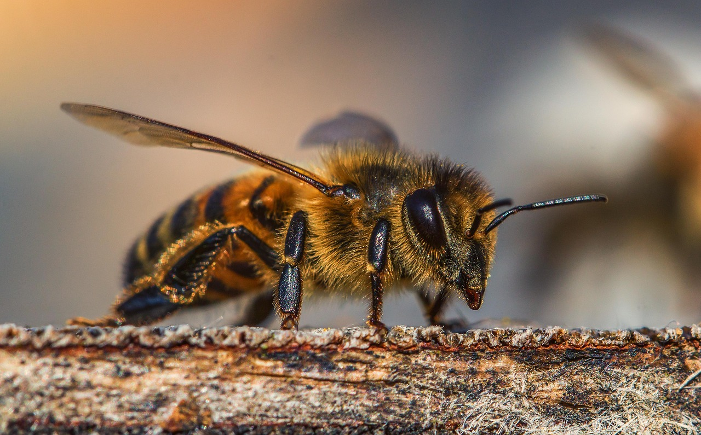
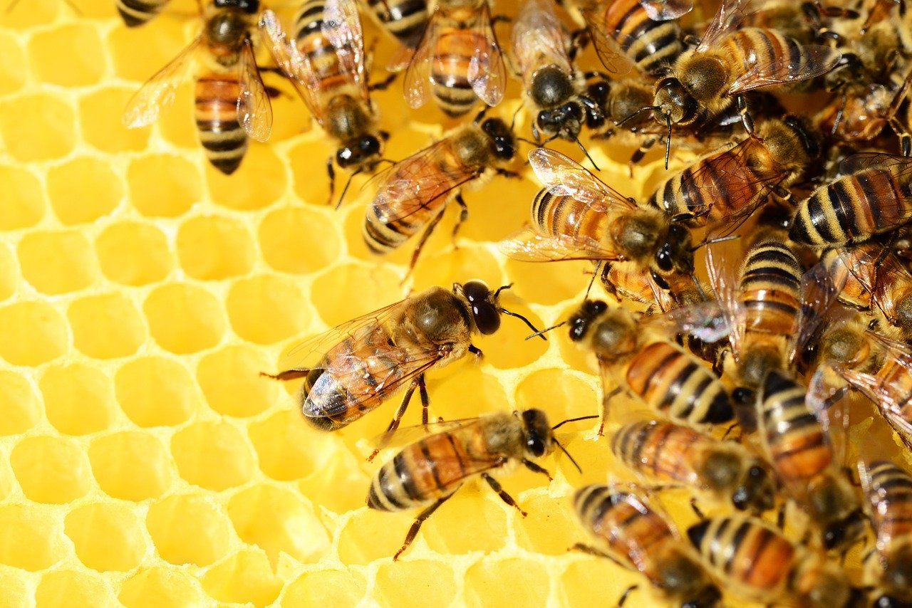
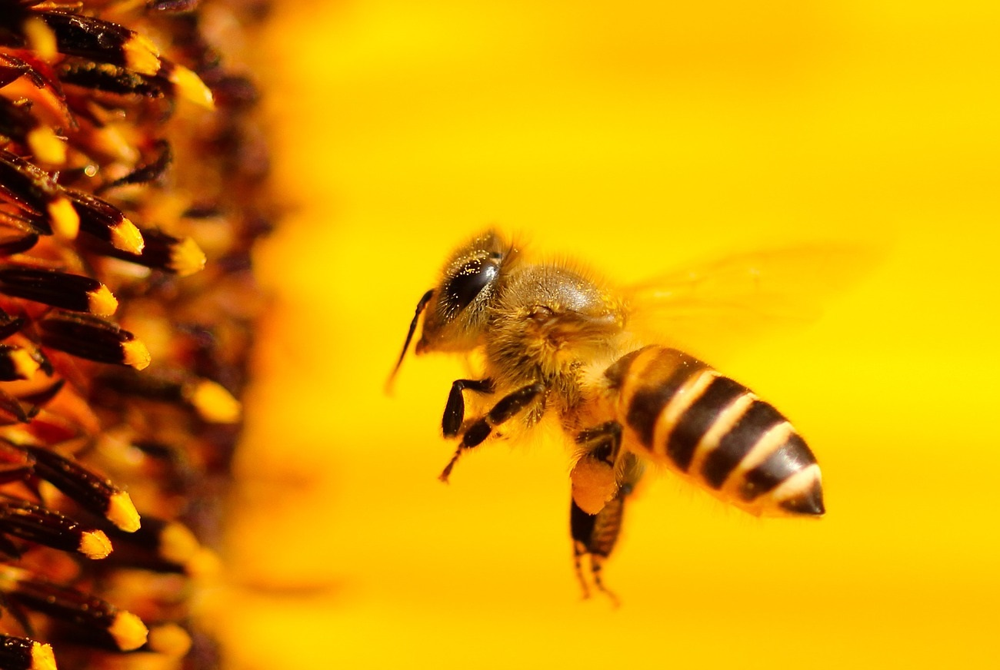
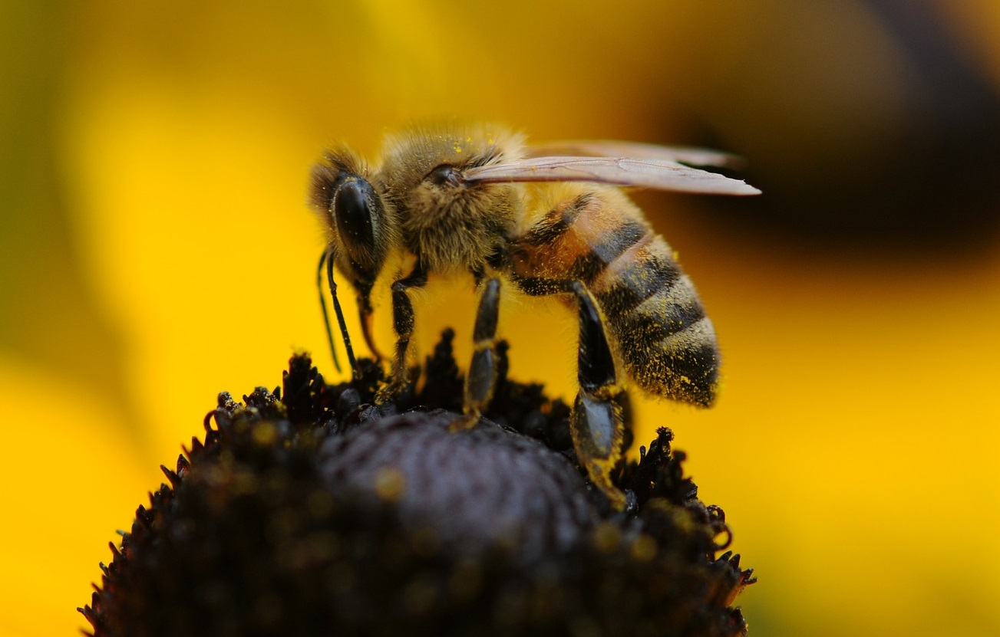

Бджоли
Бджола мала, а й та працює
Бджоли
Бджола мала, а й та працює
По зоологічній класифікації бджола належить до сімейства жалячих, загону перетинчастокрилих та її найближчими родичами є оси і мурахи. Забарвлення бджоли загальновідоме, вона складається з чорного фону з жовтими плямами. А от розмір бджоли в залежності від її виду і класу може мати від 3 до 45 мм.
Зоологами нарахована 21 тисяча видів бджіл. Також сімейство бджіл включає в себе близько 520 родів, найважливішими з яких є галактиди, мелвтидт, бджоли справжні, мегахвліди.
Є у бджіл і свої вороги, зазвичай це інші комахи, і тому числі їх найближчі родичі оси і мурахи, а також шершні. Поїданням бджіл промишляють і деякі птахи.
Бджоли, крім всього іншого, мають велику користь в медицині, навіть їх отрута в невеликих дозах корисна при таких хворобах як радикуліт, артрит, защемлення нервів.
Природне розмноження бджіл здійснюється шляхом відкладання яєць маткою, причому яйця вона може відкладати як після запліднення трутнем, так і без такого, з тією різницею, що з незапліднених яєць з’являються трутні, а з запліднених – повноцінні особини.
Шлях від яйця до повноцінної бджоли проходить через кілька стадій: спершу яйце перетворюється на личинку, потім в предлялечку і лялечку, з якої вже формується доросла бджола.
Коли бджолина сім’я досягає великого розміру, відбувається її поділ – роїння. Частина бджіл залишається на старому місці зі старою маткою, а частина з новою маткою відправляється будувати й облаштовувати новий вулик.
Бджоли - життєво важлива ланка сільського господарства: 1,4 мільярда робочих місць на фермах і три чверті світових запасів продовольства (вартістю приблизно 577 мільярдів доларів) залежать від запилення врожаю.
А зі 100 сільськогосподарських культур, що годують 90% населення світу, 70 запилюються одомашненими та дикими бджолами.
За останні 50 років обсяги сільськогосподарського виробництва, що залежить від запилення, зросли на 300%, тоді як популяції бджіл різко зменшилися.
Зокрема у Британії з 1985 по 2005 роки чисельність медоносних бджіл скоротилася на 54%. У Сполучених Штатах кількість колоній бджіл, що виробляють мед, у 1947-2008 роках зменшилася від 5,9 мільйона до 2,4 мільйона (на 59%).
"Надмірна індустріалізація, використання пестицидів, руйнування природних середовищ проживання та кліматичні зміни - усе це в сукупності призвело до такого результату, - повідомила Сабіха Малік, засновниця й очільниця Проекту всесвітнього захисту бджіл, націленого на моніторинг здоров'я бджіл по всій планеті.
Понад 40% видів безхребетних запильників (особливо бджіл і метеликів) постали перед загрозою вимирання.
Втім, науковцям бракує вичерпного набору даних, щоб проаналізувати масштаби зникнення бджіл у різних регіонах світу й виявити причини.
Однак Сабіха Малік бачить підстави для оптимізму. "Технології дозволяють нам швидко рухатися вперед. Тож спільними зусиллями ми можемо зупинити зникнення бджіл і змінити ситуацію на краще", - вважає вона.
Бджоли живуть у дуже широкому географічному ареалі, так що легше відповісти де бджоли не живуть, ніж де вони живуть. Отже, бджіл немає тільки в тих місцях, де немає ніяких квітучих рослин: жарких піщаних пустелях і холодних арктичних тундрах. У всіх інших місцях бджоли є.
Що стосується улюблених місць перебування цих комах, то вони люблять селитися в гірських ущелинах, влаштовувати свої вулики в дуплах старих дерев і земляних норах. Для бджіл важливо, щоб місце їх проживання було захищене від вітрів, і поблизу знаходилася водойма.
 Бджоли харчуються квітковим пилком і нектаром. Через спеціальний хоботок нектар надходить в зоб, де переробляється в мед. Збираючи пилок і нектар, бджоли здійснюють дуже важливу і корисну функцію по запиленню квіток. У пошуках їжі бджоли можуть пролітати до 10 км за день.
